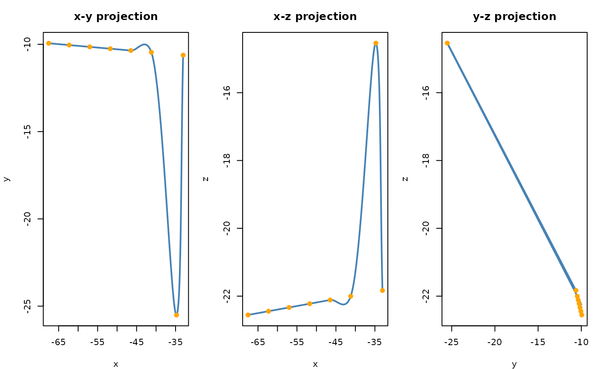

Creates a smooth Catmull-Rom spline curve through a set of 3D key points.
Usage
catmull_rom_3d(
points,
curve_type = c("centripetal", "chordal", "uniform"),
tension = 0.5,
closed = FALSE
)Arguments
- points
numeric matrix with at least 2 rows and exactly 3 columns (
x,y,z), giving the key (control) points through which the curve passes.- curve_type
character; One of
"centripetal"(default),"chordal", or"uniform"."centripetal"uses \(\alpha = 0.5\) (square-root of chord length),"chordal"uses \(\alpha = 1\) (chord length), and"uniform"is the classic formulation controlled bytension.- tension
numeric scalar in \([0, 1]\); tangent scaling factor used only when
curve_type = "uniform". At0.5(default) the curve matches the standardCatmull-Romformulation.- closed
logical; if
TRUEthe curve closes on itself by connecting the last point back to the first. Default isFALSE.
Value
An object of class "ravetools_curve" (a list) with the
following elements:
pointsThe input key-point matrix (\(n \times 3\)).
curve_typeCharacter, the parameterization type.
tensionNumeric, the tension value (relevant for
"uniform"only).closedLogical, whether the curve is closed.
get_pointA
function(t)that accepts a scalartin \([0, 1]\) and returns a named numeric vector on the curve.get_pointsA
function(n)that returns an \(n \times 3\) matrix ofnevenly spaced points along the curve, with column names"x","y","z".get_closest_tA
function(query, coarse_n = 200L)that, given a 3-element numeric vectorquery(x,y,z), returns a list with elementst(the parameter value in \([0, 1]\) of the nearest point),point(the closest point on the curve as a named numeric vector), anddistance(Euclidean distance fromqueryto the curve). The search usescoarse_nuniform samples for an initial bracket followed by scalar optimization.t_keypointsNumeric vector of length \(n\) with the
tparameter value where each key point lies on the curve. First element is always0, last is always1.segment_lengthsNumeric vector of length \(n-1\) (open curve) or \(n\) (closed curve) containing the arc length of each spline segment, estimated by numerical integration.
Examples
pts <- matrix(c(
-33.0534, -10.6213, -21.8328,
-34.7526, -25.5089, -14.5390,
-41.2002, -10.4606, -22.0032,
-46.4717, -10.3567, -22.1134,
-51.7431, -10.2528, -22.2237,
-57.0146, -10.1488, -22.3339,
-62.2860, -10.0449, -22.4442,
-67.5575, -9.9410, -22.5544
), ncol = 3, byrow = TRUE)
curve <- catmull_rom_3d(pts)
print(curve)
#> <ravetools_curve: 8 key points, type=centripetal>
#> Key points (t / x / y / z / seg_length):
#> t x y z seg_length
#> 1 0.0000000 -33.0534 -10.6213 -21.8328 16.827854
#> 2 0.1428571 -34.7526 -25.5089 -14.5390 18.227558
#> 3 0.2857143 -41.2002 -10.4606 -22.0032 5.400490
#> 4 0.4285714 -46.4717 -10.3567 -22.1134 5.273577
#> 5 0.5714286 -51.7431 -10.2528 -22.2237 5.273677
#> 6 0.7142857 -57.0146 -10.1488 -22.3339 5.273577
#> 7 0.8571429 -62.2860 -10.0449 -22.4442 5.273675
#> 8 1.0000000 -67.5575 -9.9410 -22.5544 NA
#> Total arc length: 61.55
# Sample 100 evenly spaced points along the curve
smooth <- curve$get_points(100)
head(smooth)
#> x y z
#> [1,] -33.05340 -10.62130 -21.83280
#> [2,] -33.16328 -11.74088 -21.28409
#> [3,] -33.25575 -12.97393 -20.67945
#> [4,] -33.33550 -14.28990 -20.03393
#> [5,] -33.40721 -15.65824 -19.36260
#> [6,] -33.47557 -17.04841 -18.68051
# Evaluate the curve at t = 0.5 (midpoint)
curve$get_point(0.5)
#> x y z
#> -49.10740 -10.30476 -22.16855
# get closest point on curve
curve$get_closest_t(c(-49, -10, -22))
#> $t
#> [1] 0.4971589
#>
#> $point
#> x y z
#> -49.00257 -10.30682 -22.16636
#>
#> $distance
#> [1] 0.3490284
#>
plot(curve, use_rgl = FALSE)
